在容器中开发
Visual Studio Code Dev Containers扩展允许你将容器用作功能齐全的开发环境。它使你可以在容器内打开任何文件夹（或挂载到容器中的文件夹），并利用 Visual Studio Code 的完整功能集。项目中的devcontainer.json 文件告诉 VS Code 如何访问（或创建）具有明确定义的工具和运行时栈的开发容器。此容器可用于运行应用程序，也可用于分离处理代码库所需的工具、库或运行时。
工作区文件从本地文件系统挂载，或复制或克隆到容器中。扩展在容器内部安装和运行，在那里它们可以完全访问工具、平台和文件系统。这意味着你可以仅通过连接到不同的容器来无缝切换整个开发环境。
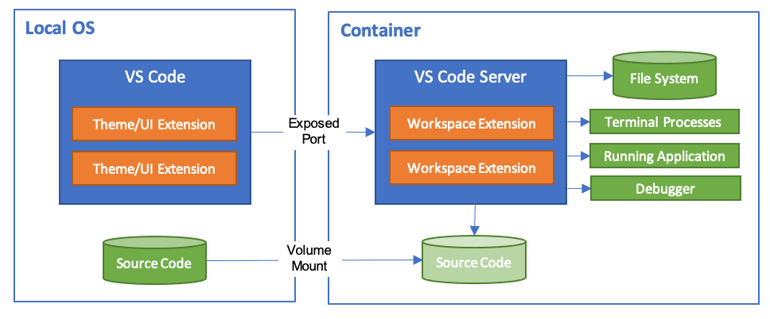
这使得 VS Code 能够提供本地级别的开发体验，包括完整的 IntelliSense（代码补全）、代码导航和调试，无论你的工具（或代码）位于何处。
Dev Containers 扩展支持两种主要的操作模式：
- 你可以将容器作为你的全职开发环境
- 你可以附加到运行中的容器来检查它。
注意：Dev Containers 扩展支持开放的 Dev Containers 规范，这使得任何人都可以在任何工具中配置一致的开发环境。你可以在我们的开发容器 FAQ 和规范网站 containers.dev 中了解更多信息。
入门指南
注意：你可以在入门Dev Containers 教程中学习如何快速上手使用开发容器。
系统要求
本地/远程主机：
你可以通过多种方式将 Docker 与 Dev Containers 扩展一起使用，包括：
- 在本地安装 Docker。
- 在远程环境中安装 Docker。
- 其他兼容 Docker 的 CLI，可在本地或远程安装。
- 虽然其他 CLI 可能也能工作，但它们并未得到官方支持。请注意，附加到 Kubernetes 集群只需要一个正确配置的 kubectl CLI。
你可以在替代 Docker 选项文档中了解更多信息。
以下是在本地或远程主机上配置 Docker 的一些具体方法：
- Windows： Windows 10 Pro/Enterprise 上的 Docker Desktop 2.0+。Windows 10 Home (2004+) 需要 Docker Desktop 2.3+ 和 WSL 2 后端。（不支持 Docker Toolbox。不支持 Windows 容器镜像。）
- macOS： Docker Desktop 2.0+。
- Linux： Docker CE/EE 18.06+ 和 Docker Compose 1.21+。（不支持 Ubuntu snap 包。）
- 远程主机： 需要 1 GB RAM，但建议至少 2 GB RAM 和双核 CPU。
容器：
- x86_64 / ARMv7l (AArch32) / ARMv8l (AArch64) Debian 9+、Ubuntu 16.04+、CentOS / RHEL 7+
- x86_64 Alpine Linux 3.9+
其他基于 glibc 的 Linux 容器如果具有所需的 Linux 先决条件，也可能可以工作。
安装
要开始使用，请按照以下步骤操作：
- 为你的操作系统安装和配置 Docker，使用以下途径之一或替代 Docker 选项，例如远程主机上的 Docker 或兼容 Docker 的 CLI。
Windows / macOS：
Linux：
- 按照你发行版的 Docker CE/EE 官方安装说明操作。如果你使用 Docker Compose，也请按照 Docker Compose 说明操作。
- 使用终端运行以下命令，将你的用户添加到
docker组：sudo usermod -aG docker $USER- 注销后重新登录，以使更改生效。
- 使用终端运行以下命令，将你的用户添加到
- 安装 Visual Studio Code 或 Visual Studio Code Insiders。
- 安装 Dev Containers 扩展。如果你计划在 VS Code 中使用其他远程扩展，可以选择安装远程开发扩展包。
使用 Git？
以下是两个值得考虑的提示：
- 如果你在 Windows 本地和容器内使用同一个仓库，请确保设置一致的行尾。有关详细信息，请参阅提示和技巧。
- 如果你使用 Git 凭据管理器进行克隆，你的容器应该已经可以访问你的凭据！如果你使用 SSH 密钥，你也可以选择共享它们。有关详细信息，请参阅与容器共享 Git 凭据。
选择你的快速入门
本文档包含 3 个快速入门——我们建议从最适合你的工作流程和兴趣的那个开始：
- 想要在快速示例仓库中试用开发容器？请查看快速入门 1：试用开发容器。
- 想要将开发容器添加到你现有的本地克隆项目之一？请查看快速入门 2：在容器中打开现有文件夹。
- 想要处理仓库的隔离副本，例如审查 PR 或调查分支而不影响你的本地工作？请查看快速入门 3：在隔离容器卷中打开 Git 仓库或 PR。
快速入门：试用开发容器
最简单的方法是尝试其中一个示例开发容器。容器教程将引导你设置 Docker 和 Dev Containers 扩展，并让你选择一个示例：
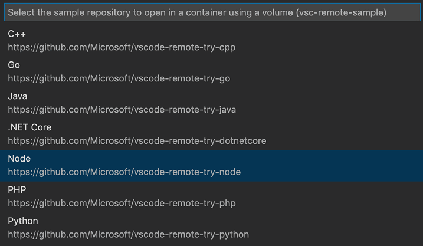
注意：如果你已经安装了 VS Code 和 Docker，那么你可以使用在开发容器中打开。你可以在创建开发容器指南中了解更多关于此功能以及如何将其添加到你的仓库的信息。
快速入门：在容器中打开现有文件夹
本快速入门介绍如何为现有项目设置一个开发容器，将其用作你的全职开发环境，使用文件系统上的现有源代码。请按照以下步骤操作：
- 启动 VS Code，从命令面板（
kbstyle(F1)）或快速操作状态栏项中运行 Dev Containers: Open Folder in Container... 命令，然后选择你要为其设置容器的项目文件夹。提示： 如果你想在打开文件夹之前编辑容器的内容或设置，可以运行 Dev Containers: Add Dev Container Configuration Files... 代替。
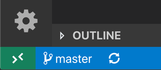
- 现在为你的开发容器选择一个起点。你可以从可筛选列表中选择一个基础的开发容器模板，或者如果在你选择的文件夹中存在现有的 Dockerfile 或 Docker Compose 文件，也可以使用它们。
注意： 当使用 Alpine Linux 容器时，由于扩展中本机代码的
glibc依赖关系，某些扩展可能无法工作。
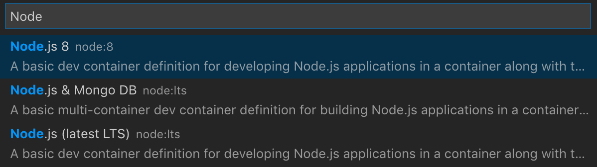
列表将根据你打开的文件夹的内容自动排序。
你可以通过额外的功能（Features）来自定义你的开发容器，你可以在下面了解更多。
显示的开发容器模板来自我们的第一方和社区索引，这是 Dev Container 规范的一部分。我们在 devcontainers/templates 仓库中托管了一组作为规范一部分的模板。你可以浏览该仓库的 src 文件夹以查看每个模板的内容。
你还可以选择使用开发容器 CLI 发布和分发你自己的开发容器模板。
- 选择容器的起点后，VS Code 会将开发容器配置文件添加到你的项目（
.devcontainer/devcontainer.json）。 - VS Code 窗口将重新加载并开始构建开发容器。进度通知会提供状态更新。你只需要在第一次打开开发容器时构建它；在第一次成功构建后打开文件夹会快得多。

- 构建完成后，VS Code 将自动连接到容器。
你现在可以在 VS Code 中与你的项目进行交互，就像在本地打开项目时一样。从现在开始，当你打开项目文件夹时，VS Code 将自动获取并重用你的开发容器配置。
提示： 想要使用远程 Docker 主机？请参阅在远程 SSH 主机上的容器中打开文件夹部分了解信息。
虽然使用这种方法将本地文件系统绑定挂载到容器中很方便，但在 Windows 和 macOS 上确实会有一些性能开销。你可以应用一些技术来提高磁盘性能，或者你也可以使用隔离容器卷在容器中打开仓库。
在 Windows 上的容器中打开 WSL 2 文件夹
如果你正在使用 Windows Subsystem for Linux v2 (WSL 2) 并已启用 Docker Desktop 的 WSL 2 后端，你可以处理存储在 WSL 中的源代码！
启用 WSL 2 引擎后，你可以：
- 从已使用 WSL 扩展打开的文件夹中使用 Dev Containers: Reopen in Container 命令。
- 从命令面板（
kbstyle(F1)）中选择 Dev Containers: Open Folder in Container...，并使用本地\\wsl$共享（从 Windows 端）选择 WSL 文件夹。
快速入门的其余部分照常适用！你可以在其文档中了解更多关于 WSL 扩展的信息。
在远程 SSH 主机上的容器中打开文件夹
如果你使用的是 Linux 或 macOS SSH 主机，你可以同时使用 Remote - SSH 和 Dev Containers 扩展。你甚至不需要在本地安装 Docker 客户端。
操作步骤：
- 按照 Remote - SSH 扩展的安装和 SSH 主机设置步骤操作。
- 可选： 设置 SSH 基于密钥的身份验证，这样就不需要多次输入密码。
- 在 SSH 主机上安装 Docker。你不需要在本地安装 Docker。
- 按照 Remote - SSH 扩展的快速入门连接到主机并在那里打开一个文件夹。
- 从命令面板（
kbstyle(F1)、kb(workbench.action.showCommands)）中使用 Dev Containers: Reopen in Container 命令。
Dev Containers 快速入门的其余部分照常适用。你可以在其文档中了解更多关于 Remote - SSH 扩展的信息。如果此模式不符合你的需求，你还可以查看在远程 Docker 主机上开发文章了解其他选项。
在远程 Tunnel 主机上的容器中打开文件夹
你可以同时使用 Remote - Tunnels 和 Dev Containers 扩展，在远程主机上的容器中打开文件夹。你甚至不需要在本地安装 Docker 客户端。这与上述 SSH 主机场景类似，但使用 Remote - Tunnels 代替。
操作步骤：
- 按照 Remote - Tunnels 扩展的入门指南说明操作。
- 在你的隧道主机上安装 Docker。你不需要在本地安装 Docker。
- 按照 Remote - Tunnels 扩展的步骤连接到隧道主机并在那里打开一个文件夹。
- 从命令面板（
kbstyle(F1)、kb(workbench.action.showCommands)）中使用 Dev Containers: Reopen in Container 命令。
Dev Containers 快速入门的其余部分照常适用。你可以在其文档中了解更多关于 Remote - Tunnels 扩展的信息。如果此模式不符合你的需求，你还可以查看在远程 Docker 主机上开发文章了解其他选项。
在容器中打开现有工作区
你也可以按照类似的过程在单个容器中打开 VS Code 多根工作区，前提是该工作区仅引用相对于 .code-workspace 文件所在文件夹（或该文件夹本身）的子文件夹的相对路径。
你可以：
- 使用 Dev Containers: Open Workspace in Container... 命令。
- 在容器中打开包含
.code-workspace文件的文件夹后，使用 文件 > 打开工作区...。
连接后，你可能希望将 .devcontainer 文件夹添加到工作区，以便在其内容尚不可见时可以轻松编辑。
另请注意，虽然你不能在同一个 VS Code 窗口中为同一个工作区使用多个容器，但你可以从单独的窗口同时使用多个 Docker Compose 管理的容器。
快速入门：在隔离容器卷中打开 Git 仓库或 GitHub PR
虽然你可以在容器中打开本地克隆的仓库，但你可能希望使用仓库的隔离副本进行 PR 审查或调查另一个分支，而不影响你的工作。
仓库容器使用隔离的本地 Docker 卷，而不是绑定到本地文件系统。除了不污染你的文件树之外，本地卷还有在 Windows 和 macOS 上性能更佳的额外好处。（有关如何在其他场景中使用这些类型卷的信息，请参阅高级配置提高磁盘性能文章。）
例如，按照以下步骤在仓库容器中打开一个"try"仓库：
- 启动 VS Code 并从命令面板（
kbstyle(F1)）运行 Dev Containers: Clone Repository in Container Volume...。 - 在出现的输入框中输入
microsoft/vscode-remote-try-node（或其他"try"仓库之一）、Git URI、GitHub 分支 URL 或 GitHub PR URL，然后按kbstyle(Enter)。
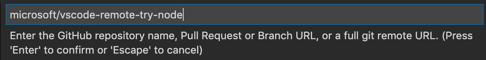
提示： 如果你选择私有仓库，你可能需要设置凭据管理器或将 SSH 密钥添加到 SSH 代理。请参阅与容器共享 Git 凭据。
- 如果你的仓库中没有
.devcontainer/devcontainer.json文件，系统会要求你从可筛选列表中选择一个起点，或者使用现有的 Dockerfile 或 Docker Compose 文件（如果存在）。注意： 当使用 Alpine Linux 容器时，由于扩展中本机代码的
glibc依赖关系，某些扩展可能无法工作。
列表将根据你打开的文件夹的内容自动排序。显示的开发容器模板来自我们的第一方和社区索引，这是 Dev Container 规范的一部分。我们在 devcontainers/templates 仓库中托管了一组作为规范一部分的模板。你可以浏览该仓库的 src 文件夹以查看每个模板的内容。
- VS Code 窗口（实例）将重新加载，克隆源代码，并开始构建开发容器。进度通知会提供状态更新。
如果你在步骤 2 中粘贴了 GitHub 拉取请求 URL，PR 将被自动检出，并且 GitHub Pull Requests 扩展将被安装在容器中。该扩展提供额外的 PR 相关功能，如 PR 资源管理器、内联交互 PR 评论和状态栏可见性。
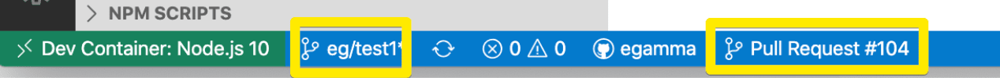
- 构建完成后，VS Code 将自动连接到容器。你现在可以在这个独立环境中处理仓库源代码，就像你在本地克隆了代码一样。
请注意，如果容器因 Docker 构建错误等原因无法启动，你可以在出现的对话框中选择 Reopen in Recovery Container，进入一个"恢复容器"，允许你编辑 Dockerfile 或其他内容。这会在一个最小容器中打开包含克隆仓库的 docker 卷，并显示创建日志。修复完成后，使用 Reopen in Container 重试。
提示： 想要使用远程 Docker 主机？请参阅在远程 SSH 主机上的容器中打开文件夹部分了解信息。
信任你的工作区
Visual Studio Code 非常重视安全性，并希望帮助你在浏览和编辑代码时安全操作，无论代码来源或原始作者是谁。工作区信任功能让你决定你的项目文件夹是否应该允许或限制自动代码执行。
Dev Containers 扩展已采用工作区信任。根据你打开和与源代码交互的方式，系统会在不同时机提示你决定是否信任你正在编辑或执行的代码。
在容器中重新打开文件夹
为现有项目设置开发容器需要信任本地（或 WSL）文件夹。在窗口重新加载之前，系统会要求你信任本地（或 WSL）文件夹。
此流程有几个例外：
- 当点击最近的条目时。
- 使用 Open Folder in Container 命令时，如果尚未信任，会在窗口重新加载后要求信任。
附加到现有容器
在附加到现有容器时，系统会要求你确认附加意味着你信任该容器。这只需要确认一次。
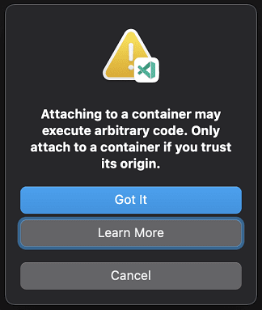
在卷中克隆仓库
在容器卷中克隆仓库时，系统会要求你确认克隆仓库意味着你信任该仓库。这只需要确认一次。
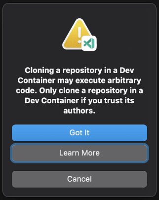
检查卷
远程运行 Docker 守护进程
这意味着信任 Docker 守护进程运行的机器。没有额外的确认提示（只有上述本地/WSL 情况中列出的那些）。
创建 devcontainer.json 文件
VS Code 的容器配置存储在 devcontainer.json 文件中。此文件类似于用于调试配置的 launch.json 文件，但用于启动（或附加到）你的开发容器。你还可以指定容器运行后要安装的任何扩展，或用于准备环境的后创建命令。开发容器配置要么位于 .devcontainer/devcontainer.json 下，要么作为 .devcontainer.json 文件（注意点前缀）存储在你的项目根目录中。
从命令面板（kbstyle(F1)）中选择 Dev Containers: Add Dev Container Configuration Files... 命令，会将所需文件作为起点添加到你的项目中，你可以根据需要进一步自定义。该命令让你可以根据文件夹内容从列表中选择预定义的容器配置，重用现有的 Dockerfile，或重用现有的 Docker Compose 文件。
你也可以手动创建 devcontainer.json，并使用任何镜像、Dockerfile 或 Docker Compose 文件集作为起点。以下是一个简单的示例，使用了一个预构建的开发容器镜像：
{
"image": "mcr.microsoft.com/devcontainers/typescript-node",
"forwardPorts": [ 3000 ],
"customizations": {
// Configure properties specific to VS Code.
"vscode": {
// Add the IDs of extensions you want installed when the container is created.
"extensions": [
"streetsidesoftware.code-spell-checker"
]
}
}
}注意： 额外的配置将根据基础镜像中的内容添加到容器中。例如，我们在上面添加了streetsidesoftware.code-spell-checker扩展，而容器也将包含"dbaeumer.vscode-eslint"，因为它是mcr.microsoft.com/devcontainers/typescript-node的一部分。这在使用devcontainer.json预构建时会自动发生，你可以在预构建部分中了解更多信息。
要了解有关创建 devcontainer.json 文件的更多信息，请参阅创建开发容器。
Dev Container 功能（Features）
开发容器"功能"是独立的、可共享的安装代码和开发容器配置单元。这个名称源于这样一个理念：引用其中一个功能可以让你快速轻松地将更多工具、运行时或库的"功能"添加到你的开发容器中，供你或你的合作者使用。
当你使用 Dev Containers: Add Dev Container Configuration Files 时，你会看到一个脚本列表，用于自定义现有的开发容器配置，例如安装 Git 或 Azure CLI：

当你重建并在容器中重新打开时，你选择的功能将在你的 devcontainer.json 中可用：
"features": {
"ghcr.io/devcontainers/features/github-cli:1": {
"version": "latest"
}
}当你直接在 devcontainer.json 中编辑 "features" 属性时，你将获得 IntelliSense：
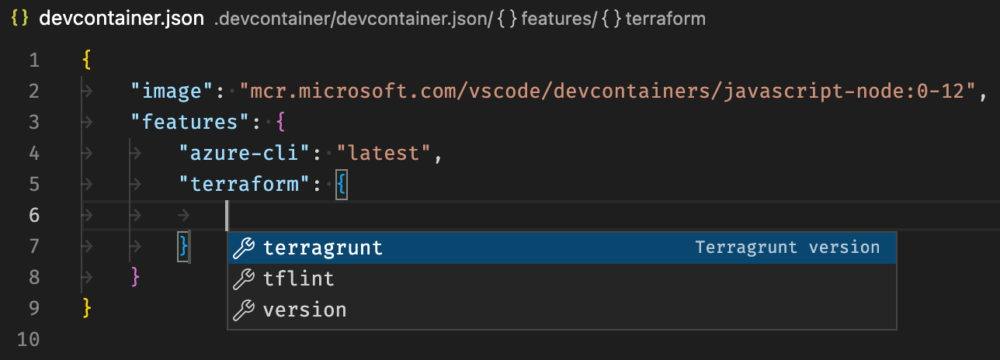
Dev Containers: Configure Container Features 命令允许你更新现有配置。
VS Code UI 中获取的功能现在来自一个中央索引，你也可以向其贡献。请参阅 Dev Containers 规范网站查看当前列表，并了解如何发布和分发功能。
"始终安装"的功能
类似于你可以设置始终安装的扩展，你可以使用 setting(dev.containers.defaultFeatures) 用户设置来设置你希望始终安装的功能：
"dev.containers.defaultFeatures": {
"ghcr.io/devcontainers/features/github-cli:1": {}
},创建你自己的功能
创建和发布你自己的 Dev Container 功能也很容易。已发布的功能可以作为 OCI 制品存储和共享，支持任何公共或私有容器注册表。你可以在 containers.dev 上查看当前已发布功能的列表。
一个功能是一个自包含的实体，位于一个文件夹中，至少包含一个 devcontainer-feature.json 和 install.sh 入口点脚本：
+-- feature
| +-- devcontainer-feature.json
| +-- install.sh
| +-- (其他文件)查看 feature/starter 仓库，了解使用开发容器 CLI 发布你自己的公共或私有功能的说明。
功能规范与分发
功能是开源开发容器规范的关键部分。你可以查看更多关于功能如何工作的信息及其分发。
预构建开发容器镜像
我们建议预构建包含你所需工具的镜像，而不是每次在开发容器中打开项目时都创建和构建容器镜像。使用预构建镜像将使容器启动更快、配置更简单，并允许你固定到特定版本的工具，以改善供应链安全性并避免潜在的破坏。你可以通过使用 DevOps 或持续集成（CI）服务（如 GitHub Actions）安排构建来自动化预构建你的镜像。
更好的是——预构建镜像可以包含 Dev Container 元数据，因此当你引用一个镜像时，设置将自动拉取。
我们建议使用 Dev Container CLI（或其他规范支持的实用工具，如 GitHub Action）来预构建你的镜像，因为它与 Dev Containers 扩展的最新功能保持同步——包括开发容器功能。构建好镜像后，你可以将其推送到容器注册表（如 Azure Container Registry、GitHub Container Registry 或 Docker Hub）并直接引用它。
你可以使用 devcontainers/ci 仓库中的 GitHub Action 来帮助你在工作流中重用开发容器。
有关更多信息，请参阅关于预构建镜像的开发容器 CLI 文章。
继承元数据
你可以通过镜像标签在预构建镜像中包含 Dev Container 配置和功能元数据。这使得镜像是自包含的，因为这些设置在引用镜像时会被自动获取——无论是直接引用、在引用的 Dockerfile 的 FROM 中引用，还是在 Docker Compose 文件中引用。这有助于防止你的 Dev Container 配置和镜像内容不同步，并允许你通过简单的镜像引用将相同配置的更新推送到多个仓库。
当你使用 Dev Container CLI（或其他规范支持的实用工具，如 GitHub Action 或 Azure DevOps 任务）预构建时，此元数据标签会自动添加，并包含来自 devcontainer.json 和任何引用的 Dev Container 功能的设置。
这允许你有一个独立的更复杂的 devcontainer.json 用于预构建你的镜像，然后在一个或多个仓库中有一个简化版。镜像的内容将在你创建容器时与此简化版 devcontainer.json 内容合并（有关合并逻辑的信息，请参阅规范）。但最简单的情况下，你可以直接在 devcontainer.json 中引用镜像以使设置生效：
{
"image": "mcr.microsoft.com/devcontainers/go:1"
}请注意，你也可以选择手动将元数据添加到镜像标签中。即使你未使用 Dev Container CLI 来构建，这些属性也会被获取（并且即使你使用了，CLI 也可以更新它们）。例如，考虑以下 Dockerfile 片段：
LABEL devcontainer.metadata='[{ \
"capAdd": [ "SYS_PTRACE" ], \
"remoteUser": "devcontainer", \
"postCreateCommand": "yarn install" \
}]'检查卷
有时你可能会遇到这样的情况：你想检查或更改一个 Docker 命名卷。你可以使用 VS Code 来处理这些内容，而无需创建或修改 devcontainer.json 文件，只需从命令面板（kbstyle(F1)）中选择 Dev Containers: Explore a Volume in a Dev Container...。
你也可以在远程资源管理器中检查你的卷。确保在下拉菜单中选择了 Containers，然后你会注意到一个 Dev Volumes 部分。你可以右键单击一个卷来检查其创建信息，例如卷的创建时间、克隆到其中的仓库以及挂载点。你还可以在开发容器中浏览它。
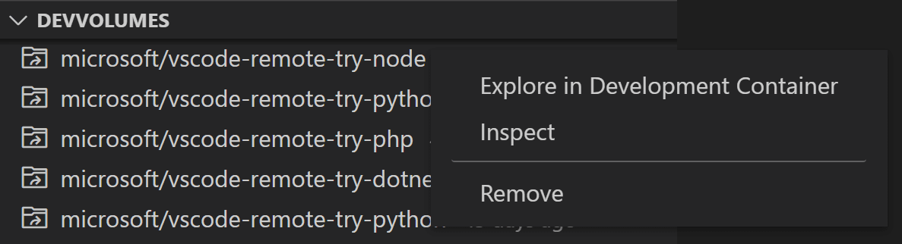
如果你安装了 Container Tools 扩展，你可以在容器资源管理器的 Volumes 部分右键单击一个卷并选择 Explore in a Development Container。
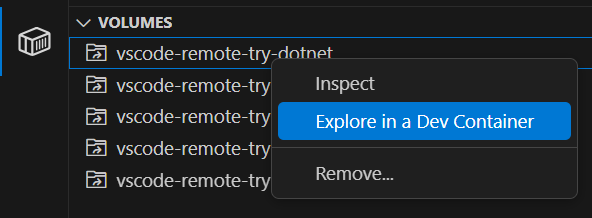
管理扩展
VS Code 在两种位置之一运行扩展：在 UI/客户端本地，或在容器中。虽然影响 VS Code UI 的扩展（如主题和代码片段）是在本地安装的，但大多数扩展将驻留在特定容器内。这允许你只安装特定任务在容器中需要的扩展，并仅通过连接到新容器来无缝切换你的整个工具链。
如果你从扩展视图安装扩展，它将自动安装在正确的位置。你可以根据类别分组来判断扩展安装在何处。会有一个 Local - Installed 类别，以及一个针对你的容器的类别。
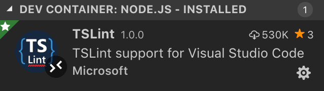
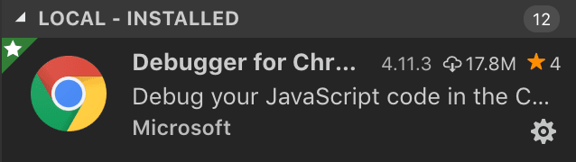
注意： 如果你是扩展作者，并且你的扩展不能正常工作或安装在了错误的位置，请参阅支持远程开发了解详细信息。
实际上需要在远程运行的本地扩展将在 Local - Installed 类别中显示为已禁用。选择安装以在你的远程主机上安装扩展。
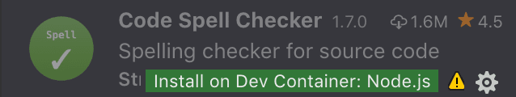
你还可以通过转到扩展视图并使用 Local - Installed 标题栏右侧的云按钮选择 Install Local Extensions in Dev Container: {Name}，将所有本地安装的扩展安装到 Dev Container 中。这将显示一个下拉菜单，你可以在其中选择要在容器中安装哪些本地安装的扩展。
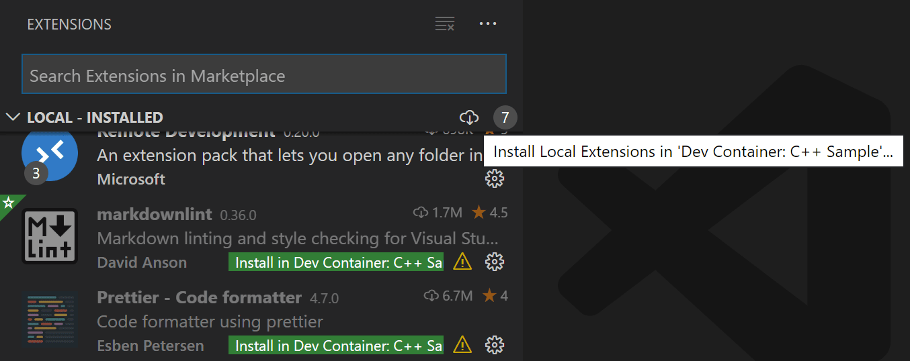
但是，某些扩展可能需要你在容器中安装额外的软件。如果遇到问题，请查阅扩展文档了解详细信息。
将扩展添加到 devcontainer.json
虽然你可以手动编辑 devcontainer.json 文件来添加扩展 ID 列表，但你也可以在扩展视图中右键单击任何扩展并选择 Add to devcontainer.json。
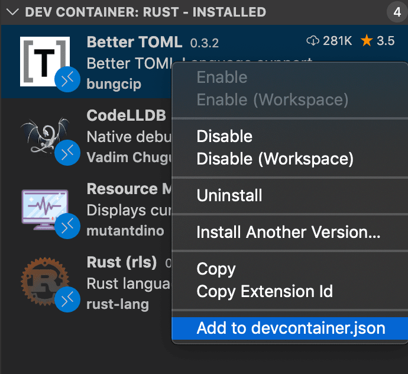
选择不安装扩展
如果基础镜像或功能配置了一个你不想在开发容器中安装的扩展，你可以通过在扩展前加上减号来将其排除。例如：
{
"image": "mcr.microsoft.com/devcontainers/typescript-node:1-20-bookworm",
"customizations": {
"vscode": {
"extensions": [
"-dbaeumer.vscode-eslint"
]
}
}
}"始终安装"的扩展
如果有一些你希望在任何容器中始终安装的扩展，你可以更新 setting(dev.containers.defaultExtensions) 用户设置。例如，如果你想安装 GitLens 和 Resource Monitor 扩展，你可以如下指定它们的扩展 ID：
"dev.containers.defaultExtensions": [
"eamodio.gitlens",
"mutantdino.resourcemonitor"
]高级：强制扩展在本地或远程运行
扩展通常被设计和测试为在本地或远程运行，而不是两者兼有。但是，如果扩展支持，你可以在 settings.json 文件中强制它在特定位置运行。
例如，下面的设置将强制 Container Tools 扩展在本地运行，并强制 Remote - SSH: Editing Configuration Files 扩展在远程运行，而不是它们的默认位置：
"remote.extensionKind": {
"ms-azuretools.vscode-containers": [ "ui" ],
"ms-vscode-remote.remote-ssh-edit": [ "workspace" ]
}值为 "ui" 而不是 "workspace" 将强制扩展在本地 UI/客户端端运行。通常，这应该仅用于测试，除非扩展的文档另有说明，因为它可能会破坏扩展。有关详细信息，请参阅首选扩展位置部分。
转发或发布端口
容器是独立的环境，因此如果你想访问容器内的服务器、服务或其他资源，你需要"转发"或"发布"端口到你的主机。你可以配置你的容器始终暴露这些端口，或者只是临时转发它们。
始终转发端口
你可以使用 devcontainer.json 中的 forwardPorts 属性，指定你在附加或在容器中打开文件夹时始终希望转发的端口列表。
"forwardPorts": [3000, 3001]只需重新加载/重新打开窗口，当 VS Code 连接到容器时，该设置将生效。
临时转发端口
如果你需要访问一个你没有添加到 devcontainer.json 或在 Docker Compose 文件中发布的端口，你可以通过从命令面板（kbstyle(F1)）运行 Forward a Port 命令来临时转发一个新端口，该端口在会话期间有效。
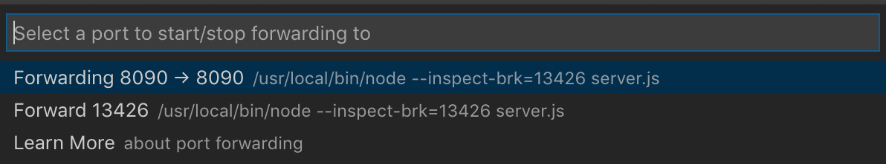
选择端口后，通知会告诉你应该使用哪个 localhost 端口来访问容器中的端口。例如，如果你转发了一个监听端口 3000 的 HTTP 服务器，通知可能会告诉你它被映射到了 localhost 上的端口 4123。然后你可以使用 http://localhost:4123 连接到此远程 HTTP 服务器。
如果你以后需要访问，这些相同的信息可在远程资源管理器的 Forwarded Ports 部分中找到。
如果你希望 VS Code 记住你已转发的任何端口，请在设置编辑器（kb(workbench.action.openSettings)）中勾选 Remote: Restore Forwarded Ports，或在 settings.json 中设置 "remote.restoreForwardedPorts": true。
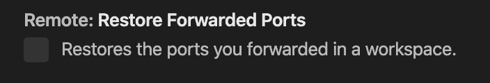
发布端口
Docker 有在创建容器时"发布"端口的概念。已发布的端口的行为非常类似于你提供给本地网络的端口。如果你的应用程序只接受来自 localhost 的调用，它将拒绝来自已发布端口的连接，就像你的本地机器会对网络调用做的那样。另一方面，转发的端口实际上对应用程序来说就像 localhost。每种方式在不同的情况下都很有用。
要发布端口，你可以：
- 使用 appPort 属性： 如果你在
devcontainer.json中引用镜像或 Dockerfile，你可以使用appPort属性将端口发布到主机。"appPort": [ 3000, "8921:5000" ] - 使用 Docker Compose 端口映射： 可以轻松地将端口映射添加到你的
docker-compose.yml文件中，以发布额外的端口。ports: - "3000" - "8921:5000"
在每种情况下，你都需要重建容器才能使设置生效。你可以通过在连接到容器时从命令面板（kbstyle(F1)）运行 Dev Containers: Rebuild Container 命令来完成此操作。
打开终端
在 VS Code 中从容器打开终端很简单。一旦你在容器中打开了一个文件夹，你在 VS Code 中打开的任何终端窗口（终端 > 新建终端）都将自动在容器中运行，而不是在本地运行。
你还可以从同一个终端窗口使用 code 命令行来执行许多操作，例如在容器中打开新文件或文件夹。输入 code --help 来了解命令行中可用的选项。

在容器中调试
一旦你在容器中打开了一个文件夹，你可以像在本地运行应用程序时一样使用 VS Code 的调试器。例如，如果你在 launch.json 中选择一个启动配置并开始调试（kb(workbench.action.debug.start)），应用程序将在远程主机上启动，并将调试器附加到它上面。
请参阅调试文档，了解在 .vscode/launch.json 中配置 VS Code 调试功能的详细信息。
容器特定设置
当你连接到开发容器时，VS Code 的本地用户设置也会被重用。虽然这保持了你用户体验的一致性，但你可能希望在你的本地机器和每个容器之间改变其中一些设置。幸运的是，一旦你连接到容器，你还可以通过从命令面板（kbstyle(F1)）运行 Preferences: Open Remote Settings 命令，或在设置编辑器中选择远程选项卡来设置容器特定的设置。每当你连接到容器时，这些设置将覆盖你已有的任何本地设置。
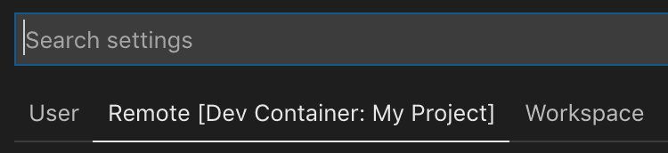
默认容器特定设置
你可以使用 settings 属性在 devcontainer.json 中包含容器特定设置的默认值。这些值将在容器创建后自动放置在容器内部的容器特定设置文件中。
例如，将此添加到 .devcontainer/devcontainer.json 将设置 Java 主文件夹路径：
// Configure tool-specific properties.
"customizations": {
// Configure properties specific to VS Code.
"vscode": {
"settings": {
"java.home": "/docker-java-home"
}
}
}由于这只是建立默认值，你仍然可以在容器创建后根据需要更改设置。
管理容器
默认情况下，Dev Containers 扩展在打开文件夹时自动启动 devcontainer.json 中提到的容器。当你关闭 VS Code 时，扩展会自动关闭你已连接的容器。你可以通过将 "shutdownAction": "none" 添加到 devcontainer.json 来更改此行为。
虽然你可以使用命令行来管理你的容器，但你也可以使用远程资源管理器。要停止容器，请从下拉菜单中选择 Containers（如果存在），右键单击正在运行的容器，然后选择 Stop Container。你还可以启动已退出的容器、删除容器和删除最近的文件夹。从详细信息视图中，你可以转发端口并在浏览器中打开已转发的端口。
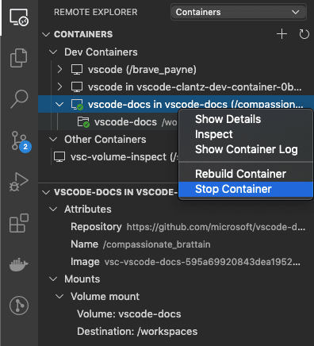
如果你想清理镜像或批量删除容器，请参阅清理未使用的容器和镜像了解不同的选项。
使用 dotfile 仓库进行个性化设置
Dotfiles 是文件名以点（.）开头的文件，通常包含各种应用程序的配置信息。由于开发容器可以覆盖各种应用程序类型，将这些文件存储在某个地方以便在容器启动运行后轻松将其复制到容器中会很有用。
一个常见的方法是将这些 dotfile 存储在 GitHub 仓库中，然后使用实用工具来克隆和应用它们。Dev Containers 扩展内置了对在你自己的容器中使用这些文件的支持。如果你对这个想法不熟悉，可以看看存在的各种dotfile 引导仓库。
要使用它，请将你的 dotfile GitHub 仓库添加到 VS Code 的用户设置（kb(workbench.action.openSettings)）中，如下所示：
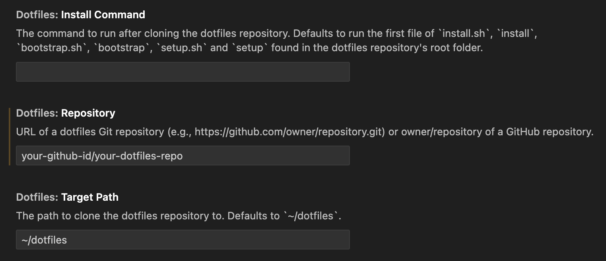
或在 settings.json 中：
{
"dotfiles.repository": "your-github-id/your-dotfiles-repo",
"dotfiles.targetPath": "~/dotfiles",
"dotfiles.installCommand": "install.sh"
}从此以后，每当创建容器时，都将使用 dotfile 仓库。
已知限制
Dev Containers 限制
- 不支持 Windows 容器镜像。
- 多根工作区中的所有根/文件夹将在同一个容器中打开，无论较低级别是否有配置文件。
- Linux 的非官方 Ubuntu Docker snap 包不受支持。请按照你发行版的官方 Docker 安装说明操作。
- 不支持 Windows 上的 Docker Toolbox。
- 如果你使用 SSH 克隆 Git 仓库且你的 SSH 密钥有密码短语，VS Code 的拉取和同步功能在远程运行时可能会挂起。解决方法：使用无密码短语的 SSH 密钥、使用 HTTPS 克隆，或从命令行运行
git push。 - 本地代理设置不会在容器内重用，这可能会阻止扩展正常工作，除非配置了适当的代理信息（例如，具有适当代理信息的全局
HTTP_PROXY或HTTPS_PROXY环境变量）。 - 当 ssh-agent 在 Windows 上运行版本 <= 8.8 且 SSH 客户端（在任何平台上）运行版本 >= 8.9 时，Windows 上的 OpenSSH 版本之间存在不兼容。解决方法是将 Windows 上的 OpenSSH 升级到 8.9 或更高版本，使用 winget 或来自 Win32-OpenSSH/releases 的安装程序。（请注意，
ssh-add -l将正常工作，但ssh将失败，并显示: Permission denied (publickey)
请参阅此处查看与容器相关的活跃问题列表。
Docker 限制
请参阅 Windows 或 Mac 的 Docker 疑难解答指南了解更多信息。
Container Tools 扩展限制
如果你从 WSL、Remote - Tunnels 或 Remote - SSH 窗口使用 Container Tools 或 Kubernetes 扩展，在容器资源管理器或 Kubernetes 视图中使用附加 Visual Studio Code 上下文菜单操作将要求你再次从可用容器中选取。
扩展限制
目前，大多数扩展将在 Dev Containers 中无需修改即可工作。但是，在某些情况下，某些功能可能需要更改。如果你遇到扩展问题，请参阅此处了解常见问题和解决方案的摘要，你可以在报告问题时向扩展作者提及这些信息。
此外，虽然支持 Alpine，但在容器中安装的某些扩展可能由于扩展中本机代码的 glibc 依赖关系而无法工作。有关详细信息，请参阅使用 Linux 进行远程开发文章。
高级容器配置
请参阅高级容器配置文章，了解有关以下主题的信息：
- 添加环境变量
- 添加另一个本地文件挂载
- 更改或删除默认源代码挂载
- 提高容器磁盘性能
- 向开发容器添加非 root 用户
- 设置 Docker Compose 的项目名称
- 从容器内部使用 Docker 或 Kubernetes
- 同时连接到多个容器
- 在远程 Docker Machine 或 SSH 主机上的容器中开发
- 减少 Dockerfile 构建警告
- 与容器共享 Git 凭据
devcontainer.json 参考
有一个完整的 devcontainer.json 参考，你可以在其中查看文件架构，以帮助你自定义开发容器并控制如何附加到运行中的容器。
问题或反馈
- 请参阅提示和技巧或 FAQ。
- 在 Stack Overflow 上搜索。
- 添加功能请求或报告问题。
- 创建开发容器模板或功能供他人使用。
- 查看并提供对开发容器规范的反馈。
- 为我们的文档或 VS Code 本身做贡献。
- 请参阅我们的 CONTRIBUTING 指南了解详细信息。
疑难解答
Unable to write file (NoPermissions (FileSystemError))
在以下配置中运行开发容器时，可能会遇到此问题：
- Docker Desktop 在 Windows Subsystem for Linux (WSL) 后端运行
- 启用了增强容器隔离 (ECI)
请查看 issue #8278 了解可能的解决方法。
后续步骤
- 附加到运行中的容器 - 附加到已在运行的 Docker 容器。
- 创建开发容器 - 为你的工作环境创建自定义容器。
- 高级容器 - 查找高级容器场景的解决方案。
- devcontainer.json 参考 - 查看
devcontainer.json架构。